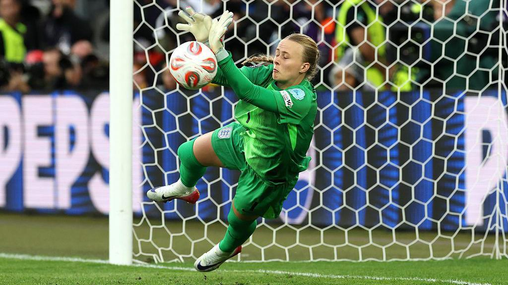
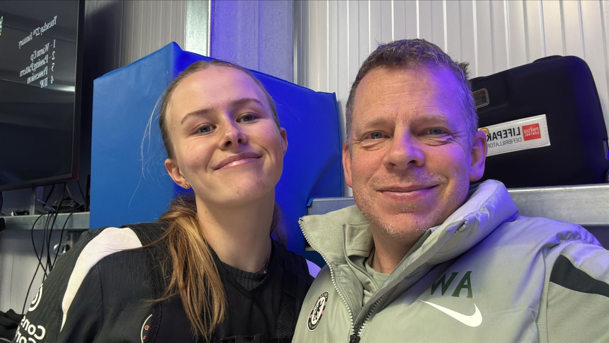
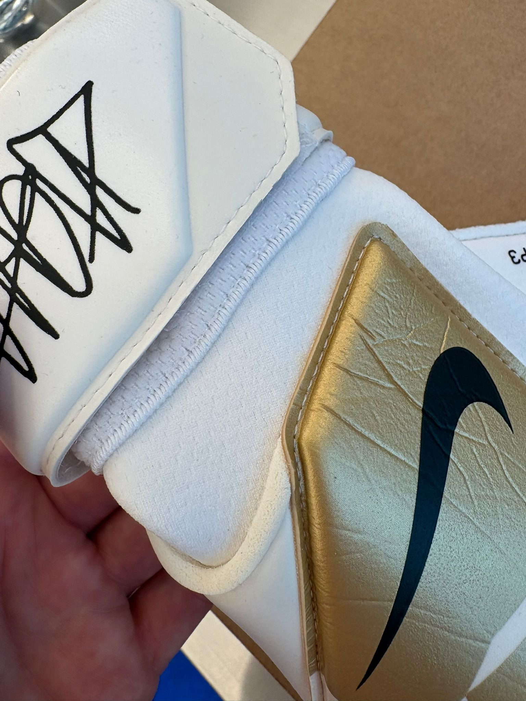

Hannah visited the London NSRL for a 3D Footscan to optimize boot fitting. While we were with her, Tobie Hatfield asked a simple question: what would you change about our product to optimize for your position?
Hannah's answer was immediate. The goalkeeper gloves — they don't fit. Not because they're the wrong size, but because they were never designed for a female hand.

Most goalkeeper gloves are designed for men. The fit, feel, and proportions are based on a male hand and do not address glove comfort, fit, or performance for the female goalkeeper.

Scientific studies consistently show significant sexual dimorphism in hand dimensions. Adult males generally possess hands that are 10–15% larger across multiple metrics — but it's not just size. Female hands have different proportions.
Ergonomics research shows that female hands differ in breadth-to-length ratios — the "Hand Index." Women's hands are not just smaller versions of men's. They are shaped differently. This matters for grip, feel, and control.
The 2D:4D digit ratio is the most studied proportional difference. In males, the ring finger is typically longer than the index finger (ratio < 1.0). In females, the index finger is often equal to or longer than the ring finger (ratio ≥ 1.0). This affects finger-to-finger spacing, gusset fit, and palm alignment inside the glove.
We asked Sammy Quayle from the UK Sports Marketing Team to collect a more detailed description of Hannah's feedback at the training ground post-session.
Women-specific goalkeeper gloves already exist from smaller brands. They're not just resized — they're re-engineered.
This is the same theme that surfaced at WISC 2026 — fighter pilots in flight gear not designed for women, cricketers using off-the-shelf bats with no female option. Equipment designed for men, used by women. The pattern is everywhere.
Hannah's feedback went straight to the team. Here's what happened next.
The best product insights come from listening.
Hannah didn't fill out a survey. She wasn't in a focus group. She was at the NSRL for a Footscan, and someone asked the right question. That one conversation surfaced a real problem — one that other brands have already started solving — and set a prototype in motion.
This is what the London NSRL is for. Get close to the athletes. Listen. Then move.
This story echoes findings from the Women in Sport Congress 2026 — where fighter pilots and cricketers independently surfaced the same problem. From flight suits to cricket bats to goalkeeper gloves, the pattern is consistent.